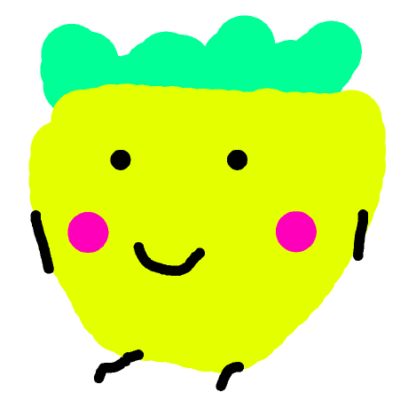

Working Projects | 진행중인 프로젝트
Multath - Start and be a Math genius

YST API - Powerful API for Java
YST Minecraft Server Manager - Fully GUI Server Manager for MC

Yellowstrawberry Dev. | 노랑딸기 (This Page has been Outdated) Please goto https://yellowstrawberry.me/
Working Projects | 진행중인 프로젝트
Multath - Start and be a Math genius
YST API - Powerful API for Java
YST Minecraft Server Manager - Fully GUI Server Manager for MC
© Yellowstrawberry. All rights reserved. | Written by Yellowstrawberry